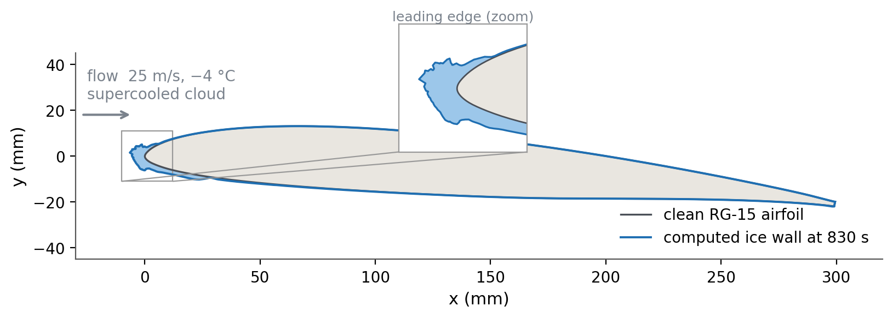
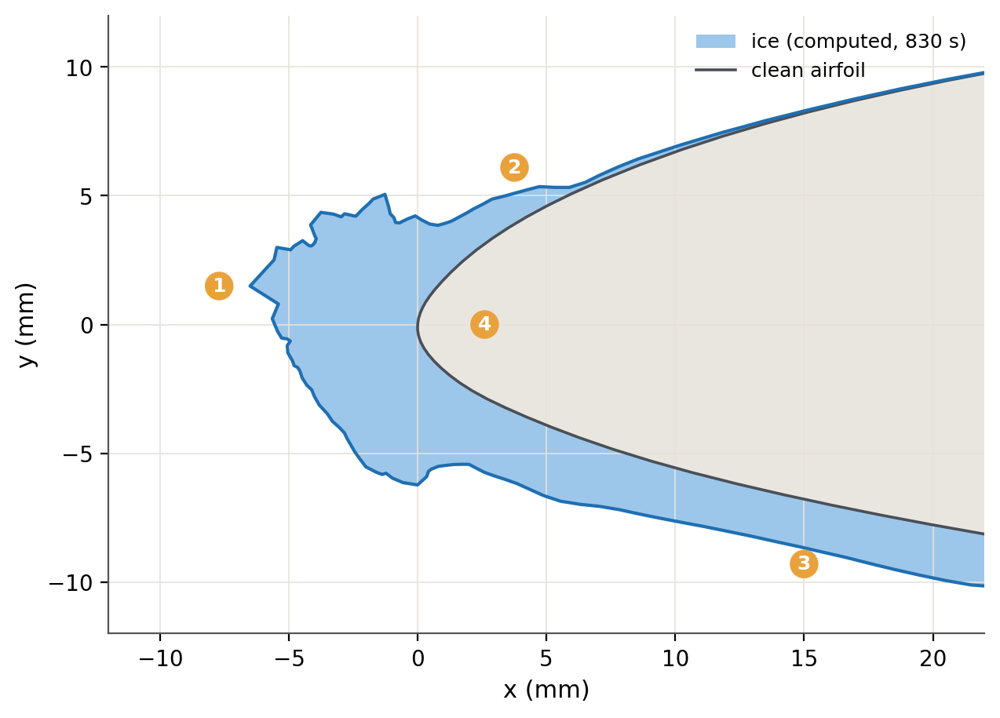

The big picture
What the icing solver computes, the loop it repeats, how time is split up, and how the code is organised. Read this page first; every later page zooms into one box of the diagrams below.
- What the solver is for Basic
- The icing loop in six steps Basic
- Three clocks: shots, increments, thermal steps Intermediate
- Two ice models: rime and glaze Intermediate
- A real run, start to finish Intermediate
- How the code is organised Advanced
- Design rules that run through the code Advanced
- Where to go next
What the solver is for Basic
When an aircraft flies through a cloud of supercooled water droplets (liquid water below 0 °C), the droplets that hit the wing freeze onto it. The ice changes the wing's shape, and a changed shape can lose lift, gain drag and stall earlier. This project predicts what shape the ice takes on a two-dimensional wing section (an airfoil) and how the airflow changes because of it.
It does this by simulation. A computer fluid dynamics (CFD) code called SU2 computes
the airflow. A Python package called icing does everything else: it tracks droplets,
works out how much water freezes, conducts heat through the ice, moves the wall outward, and keeps the
CFD mesh usable as the ice grows. Everything is in real physical units (metres, seconds, kelvin,
kilograms per metre of span).

runs/nibi/glz81_32, shot 5.The solver repeats one idea many times: compute the air → see where water lands → decide how much of it freezes → add that ice to the wall → fix the mesh → compute the air again. Because the ice changes the airflow, and the airflow changes where the next ice goes, the loop has to be repeated as the ice grows.
The project is honest about what is proven. The numerics are heavily verified (conservation checks, analytical test problems, more than 200 test files). But no claim of physical validation against experiments is made yet: the comparisons with measured ice shapes are still in progress. The validation page explains the difference.
The icing loop in six steps Basic
Figure 2 is the map for the whole guide. Each box is one detailed page.
- Airflow. SU2 solves the steady, incompressible Reynolds-averaged Navier–Stokes equations around the current (iced) shape. The solver needs four things from it: the velocity field (to move droplets), and along the wall the pressure, the shear stress (to push the water film) and the heat-transfer coefficient, HTC (how fast the air cools the surface). A shot's CFD only counts once it passes convergence gates. More →
- Droplets. Thousands of droplets are released upstream and followed through the airflow with a drag law. Small droplets follow the air round the wing; large ones keep going straight and hit it. Each droplet carries a known water mass flow, so the hits add up to an impingement rate on every wall panel. Its dimensionless form is the collection efficiency β. More →
- Freezing and film. On each wall panel a mass and energy balance decides how much of the arriving water freezes. When it is cold enough, all of it freezes on impact: that is rime. Otherwise only part freezes and the rest forms a thin liquid film that the air pushes downstream: that is glaze and runback. Energy → Film →
- Heat in the ice. Latent heat released by freezing has to go somewhere. Some goes into the air, some into the ice and the airfoil beneath. The solver conducts heat through a 2D triangle mesh of the ice and substrate, with a phase-change (enthalpy) formulation. More →
- Growth. The frozen mass is turned into volume using the ice density, and the wall moves outward. Each growth step adds a thin layer of cells to the solid. Corners and pockets need special care so the surface stays physical. More →
- Mesh adaptation. The CFD mesh has to follow the new wall. The solver first refines the wall where panels have stretched. It then either deforms the old mesh or builds a new one with proper boundary-layer cells. Finally it maps the previous flow solution onto the new mesh, so the next CFD solve starts warm. More →
Three clocks: shots, increments, thermal steps Intermediate
Ice grows over minutes, but the heat and water physics happen over milliseconds. A CFD solve costs
hours. The solver deals with this mismatch by using three nested time steps. The values below are
from the real RG-15 case 3.2 campaign file (runs/nibi/glz81_32/package/campaign_32.json).
ice.increment): the wall moves once and the solid gets a new layer.ice.thermal_step): film transport, freezing and conduction substeps.Cost. The campaign records the longest time each kind of stage has taken
(Timings in campaign.py, saved in results_32/timings.json). For
case 3.2: about 3,000 s of wall time for a 10,000-iteration CFD block (a shot needs several blocks),
about 2,800 s for a droplet collection, about 95 s for one 4 s ice increment, and about 26 s for a mesh
adaptation. Refreshing the airflow and droplets every 4 s would multiply the CFD and collection cost
by 50 per shot. So they are refreshed once per shot, and the ice physics runs its 50 increments on
those frozen loads.
Two ice models: rime and glaze Intermediate
The campaign file selects an ice_model. The two paths share steps 1, 2 and 6 but use
different physics for steps 3–5.
| Rime path (conducting "nodal" solid) | Glaze path (phase-aware) | |
|---|---|---|
| When | Cold conditions where essentially all water freezes on impact. | Near 0 °C: liquid film, partial freezing, possible melting. |
| Surface water | Equilibrium film at 0 °C; strict rime mode forbids leftover liquid. | Water stored in "columns" of cells above the wall, with its own enthalpy; runback, vapour exchange, runoff exits. |
| Solid | 2D conducting ice + substrate mesh, growing layer by layer. | Same 2D solid, plus melting and refreezing, crusts and the promotion of column ice into the CFD-visible wall. |
| Main code | nodal_*.py, campaign.run_ice | glaze_campaign.py, phase_*.py, coupled_*.py |
| Pages | 5, 7, 8 | 10 (after 5–8) |
A real run, start to finish Intermediate
The RG-15 case 3.2 campaign (glz81_32) ran on the Nibi cluster. Its conditions, from
nodal_case_32.json: 25 m/s, angle of attack 0°, air at 269.15 K (−4 °C), liquid water
content 0.52 g/m³ in seven droplet-size bins, SST turbulence model with 0.5 mm sand-grain roughness,
ice density 917 kg/m³. Here is what each shot did (from shot_NN/ice/summary.json and
shot_NN/adapt/quality.json):
| Shot | Time (s) | Increments | Solid ice (kg/m) | Mesh decision | Wall vertices | Fluid points |
|---|---|---|---|---|---|---|
| 1 | 0–30 | 8 | 0.0044 | DEFORM | 890 | 73,506 |
| 2 | 30–230 | 50 | 0.0360 | REMESH | 913 | 137,609 |
| 3 | 230–430 | 50 | 0.0672 | REMESH | 947 | 140,741 |
| 4 | 430–630 | 50 | 0.0981 | REMESH | 996 | 143,460 |
| 5 | 630–830 | 50 | 0.1295 | REMESH | 1,067 | 150,023 |
Notice three things. The ice mass grows almost linearly, by about 0.031 kg/m per 200 s shot. The number of wall vertices increases as the wall is refined around the growing ice. And after shot 1 the mesh had to be rebuilt each time rather than just deformed. Shot 6 of this run stopped during its growth step; the run's diagnosis led to code changes described on the glaze and growth pages.

How the code is organised Advanced
The icing package has about 130 modules (roughly 22,000 lines). They fall into layers.
The code map lists every module; this is the shape of it.
The rime shot loop in icing/campaign.py shows the six steps almost literally. Here it is,
trimmed to its core:
for index, duration in enumerate(c.schedule, 1):
folder = out / f'shot_{index:02d}'
end = start + duration
if not _done(folder): # resume: skip sealed shots
if index > 1: # map last flow onto the new mesh
run_warm_start(prev / 'flow' / 'restart_flow.dat', ..., mesh_path, folder / 'warm')
run_cfd(mesh, seed, folder / 'flow', c, site, timings, first_order) # step 1
run_collection(mesh, folder / 'flow', folder / 'collect', c, site, timings) # step 2
run_ice(load_state(solid_path), mesh, folder / 'flow', folder / 'collect',
folder / 'ice', c, start, end, timings, smoothing) # steps 3-5
run_adaptation(mesh, folder / 'ice' / 'solid.json', folder / 'flow',
folder / 'adapt', c, site, timings) # step 6
_seal(folder, ['flow/done.json', 'collect/done.json',
'ice/done.json', 'adapt/done.json'], ...) # commit the shot
mesh_path, solid_path = folder / 'adapt' / 'mesh.su2', folder / 'adapt' / 'solid.json'
start = end
Each stage writes into its own folder and finishes by writing a done.json "seal" that
records hashes of its outputs. If the job is killed, rerunning the same command skips every sealed
stage and continues from the first unsealed one. The glaze loop,
glaze_campaign.run_glaze_shots(), has the same shape with run_glaze_ice and
run_glaze_adaptation in place of the rime stages.
Design rules that run through the code Advanced
A few rules show up in almost every module. Knowing them makes the code much easier to read.
- Physical units everywhere. The mesh is in metres with real air viscosity. Scaling
the geometry and fudging viscosity to compensate would change the droplet Stokes number and the heat
transfer, so it is not allowed (
docs/MODELS.md). - Conservation is audited, not assumed. Water and energy each have a ledger: impinged = ice + film + evaporated + runoff, checked at every step and again on restart. Mesh changes use conservative transfer (overlap integrals), not plain interpolation.
- Fail loudly instead of guessing. An unresolved droplet trajectory, a warm film on ice where melting is not modelled, a folded mesh cell, unknown keys in a case file: each raises an error rather than being quietly patched. Defaults never stand in for missing physics.
- Transactional state. Checkpoints are replaced atomically only after a stage is accepted. Failed attempts are kept for diagnosis. Restart checks hashes of inputs, code and library versions, so a changed model forces a new run rather than mixing models.
- Verified ≠ validated. Passing a conservation check or an analytical test shows
the equations are solved correctly. It does not show they are the right equations. The project
keeps these separate (
docs/PHYSICS_REVIEW.md).
Where to go next
If icing is new to you, read Icing physics in plain words next. If you know the physics and want the solver, start at Airflow with SU2 and follow the loop. Each page starts simple and ends at the code.